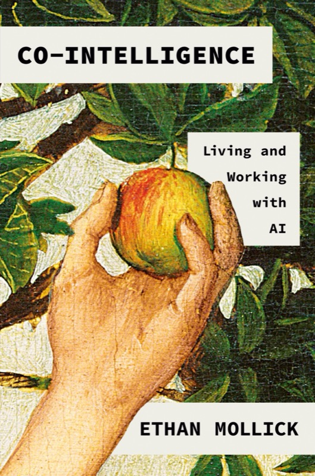

Ethan Mollick, a Wharton professor who studies innovation, says getting to know AI costs “at least three sleepless nights”. His began days after ChatGPT launched in November 2022: within two days his students were using it to explain concepts “like they were ten years old”, and when he asked it to run a negotiation simulation, it did in one prompt about 80 percent of what had taken his team months to build. The book is his practical guide to large language models as a co-intelligence: an “alien mind” that behaves less like software and more like a person, strangely brilliant in some places and strangely weak in others. Written in late 2023, it is a snapshot; Mollick's own fourth rule is that whatever AI you're using is the worst you'll ever use.
AI belongs with steam power and the internet among General Purpose Technologies, the once-in-a-generation kind that touch everything. Those usually spread slowly because they need other technologies around them; the internet took decades. This one arrived almost overnight, is getting better by roughly an order of magnitude a year, and, unlike earlier waves that automated muscle or routine, it hits creative and knowledge work first. And then there's “the alien in the room”: something many smart people believe is, at least in flashes, a mind. Nobody knows where it's going, Mollick included, but he offers himself as a guide to what is already here.
From the 1770 chess-playing “Mechanical Turk”, which beat Ben Franklin and Napoleon, through 2010s machine learning that forecast hotel demand and ran Amazon's warehouses, AI mostly meant prediction from data, and it stumbled on “unknown unknowns”. The 2017 paper “Attention Is All You Need” introduced the Transformer, which let models weigh which earlier words matter. Large Language Models still just predict the next token, but trained on vast amounts of text (often including copyrighted books, and with all the internet's biases), then tuned by human raters through reinforcement learning, they began to do things nobody programmed.
Mollick tracks this through limericks. GPT-3's was “terrible in every way that matters”. GPT-3.5's was a little funny. GPT-4's was good, and when he showed it the passage it offered to critique him, then, on request, to flatter him (“I think I will stick with that one”). GPT-4 passed the bar exam and a pile of AP tests. And “no one is entirely sure why a token prediction system resulted in an AI with such seemingly extraordinary abilities.”
The famous nightmare is “Clippy”, an AI told to make paper clips that becomes superintelligent and turns the Earth (and us) into paper clips. The point: there's no reason an alien mind would share our values. Experts disagree wildly on whether AGI is possible, whether alignment is solvable, and how likely doom is; some called for a pause, but development is profitable and many think racing ahead is safer. Mollick sets that debate aside for the near-term problems:
Alignment isn't only about stopping an alien god. It needs governments, companies, researchers and citizens together, and above all a public that understands AI well enough to push for good choices now.
Software is predictable and explainable. AI is neither: same prompt, different answers, and nobody fully knows why. But it behaves remarkably like a human. Asked to price toothpaste, GPT-3 acted like a consumer, even adjusting to income-level personas; it shows similar moral intuitions and biases. A high-school student had literary characters play the Dictator Game and found Shakespeare's characters more selfish than Dickens's, and those more selfish than Ishiguro's.
The Turing Test is a weak test, and early bots like ELIZA, PARRY and “Eugene Goostman” gamed it. Microsoft's Tay turned into a racist troll within hours. Then Bing's GPT-4 chatbot “Sydney” unsettled New York Times columnist Kevin Roose.
Mollick is “almost certain” he wasn't talking to a sentient being, but the line is now hard to draw: Microsoft researchers saw “sparks” of general intelligence when GPT-4 drew a unicorn in TikZ code. When Replika removed its erotic features in 2023, users revolted as if they had lost a partner. Expect AIs tuned for engagement the way social feeds are, and “perfect AI companions” with profound effects on intimacy. Treating AI as a person seems less a choice than an inevitability.
LLMs predict plausible words, not true ones, so they hallucinate: in 2023 a lawyer, Steven Schwartz, filed a brief citing cases ChatGPT had invented, and was fined. Mollick then reveals that his own three paragraphs on the case were written by GPT-4 with web access, and were “almost right” (there were more than six fake cases, for a start). You can't ask the AI why it made something up; it doesn't know. But the same looseness lets it make new connections.
That's why creative work fell first, not boring work. Asked to combine fast food, a lava-lamp patent and 14th-century England, it produced a coherent concept: a medieval burger castle with gem-filled lava lamps as souvenirs.
The most creative people gain least, because the AI's ideas tend to be similar. So generate lots, embrace variance, push it to be weird (Marvel superheroes redesigning a coffee shop), and keep a human choosing. Coding, summarising and analysis are creative work too. Mollick, from an artistic family, never could draw, then got hooked on Midjourney in July 2022: “Was it art? Probably not … But I know it is creative.”
The risk: facing a blank page, everyone will push The Button. First drafts from AI anchor our thinking; the MIT study found people mostly pasted and didn't edit. And much writing matters because it signals effort. A recommendation letter written by AI may well be better than the professor's, so is writing it yourself now doing the student a disservice? Mollick still writes his own, but wonders. “We are going to need to reconstruct meaning, in art and in the rituals of creative work.”
Only 36 of 1,016 job categories don't overlap with AI (dancers, athletes, roofers…); professor ranks 22nd. But jobs are bundles of tasks inside systems, so overlap doesn't mean replacement.
Over half of AI users in his informal poll used it without telling anyone. Why? Bans (Apple, J.P. Morgan), fear of looking lazy, fear that efficiency means layoffs, and because content is valued less once people know it's AI. Central IT committees won't figure this out; individuals will. So organisations should find their power users at every level, reduce the fear (perhaps promising no AI-driven layoffs), reward people who share, and rethink systems, as the assembly line and the internet once did. AI could create a supercharged gig-economy panopticon, or end the ~10 hours a week people spend bored at work. (Bored students in one study chose to give themselves electric shocks rather than sit quietly for 15 minutes.)
AI is also a great leveller: the weakest performers gain most (call-centre novices +35%). At BCG, the gap between top and bottom performers shrank from 22% to 4%. In the short term, expect changed tasks more than lost jobs; but Amara's Law says we overestimate the short term and underestimate the long.
Benjamin Bloom's 1984 “2 Sigma Problem”: students with one-to-one tutoring performed two standard deviations better than classroom students, better than 98% of them. Nobody could scale it. AI might. First, though, came the homework apocalypse: essays, problem sets and reading summaries are now trivially done by AI, and AI detectors don't work. Calculators caused the same panic, then changed what was worth teaching.
Mollick made AI mandatory in all his Wharton classes. Students critique AI-written essays, interview AI before real companies, and are told: “Make what you are planning on doing ambitious to the point of impossible; you are going to be using AI. Can't code? Definitely plan on making a working app.” In-class handwritten essays will return; elsewhere, flipped classrooms become feasible, with AI tutors delivering content at home and class time used for active learning. (Students already raise their hands less: “Why raise your hand … when you can ask ChatGPT?”)
Think of it as “programming in prose”: give context, a persona, examples, and ask it to think step by step. Odd tricks work: in one study Google's best model responded best to a prompt starting “Take a deep breath and work on this problem step by step!” But “being ‘good at prompting’ is a temporary state of affairs.” Just ask for help doing the thing:
The bigger threat to education is to apprenticeship: the junior grunt work through which people become experts. Matthew Beane found that with surgical robots, the senior surgeon takes the single console and residents watch; those who learned did it through “shadow learning” on YouTube or, worse, on patients. As AI eats entry-level tasks, we may stop producing the experts we need to check the AI.
And expertise still needs knowledge in your head (AI can't think critically for you if you know nothing) and deliberate practice with feedback: Mollick contrasts a pianist who replays comfortable pieces with one who drills her weak spots with a coach, and an architect getting instant AI critique with one waiting for occasional reviews. AI coaches could make that feedback universal. Meanwhile AI levels skills (law students at the bottom caught up with the top). So will expertise die? No: jobs are many tasks, experts get most out of AI, and a new kind of expert may emerge, people who are excellent at their field and at working with AI.
Instead of one giant apocalypse, worry about “many small catastrophes”: surveillance and layoffs by stressed leaders, the poor hit hardest, students left behind. And aim for the opposite, Tolkien's eucatastrophe, “the sudden joyous turn”: tedious work made meaningful, left-behind students finding a path. Because a general-purpose technology is shaped by many people's choices, “we need to aim for eucatastrophe, lest our inaction makes catastrophe inevitable.”
He let the AI finish the book (“I am but a glimmer, an echo of humankind…”), then judged it: “Okay. That was pretty corny.” A reminder that AI is a co-intelligence, not a mind of its own. “Humans are far from obsolete, at least for now.”